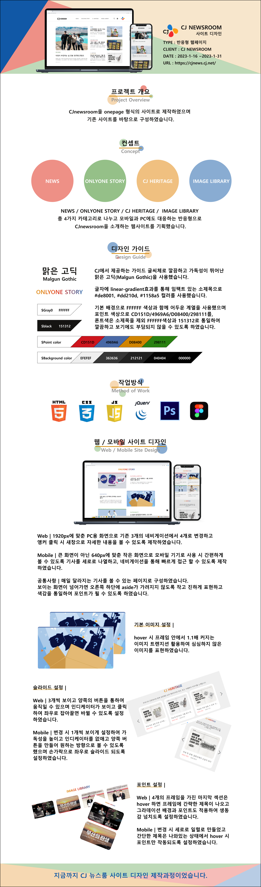

- Name : 손수경
- Birth : 1991.02.03
- Address : 인천광역시 강화군
- Phone : 010-7795-9123
- Email : tnrud6536@naver.com
로딩중
Son Su Kyoung
SHINING PUBLISHER
내면까지 실속 있게 눈부신 자수정 같은 웹퍼블리셔 손수경 입니다.
새로운 도전에 과감히 뛰어들어 책임감을 가지고 맡은 일은 끝까지 해낼 것이며
효율적인 시멘틱 웹사이트 구축을 위하여 느리지만 지독한 끈기를 가지고 배우는
것에 즐거움을 알고
자기계발하고 아이디어를 구상, 기획하여 임무를 완수할 준비가 되어있습니다.
스크롤바를 내리면 작품을 감상할 수 있습니다.
ABOUT ME
VISION
보석처럼 빛나는 웹 퍼블리셔로 팀에 도움이 되는 존재가 되고 싶습니다.
사용자에 따른 목표를 설정하고 누구나 편리하게 사용할 수 있는
좋은 디자인을 만들어내는 것이 저의 목표입니다.
살면서 생각해보지 못했던 웹 디자인 분야에 도전했던 것이 인생의 터닝포인트라
생각합니다.
심미적 디자인을 넘어 개성 있고 유용한 제품으로 고객을 만족시키고
좋은 기업 이미지를 만들어 사회에 이바지하고 싶다는 생각이 들었습니다.
불가능 한 일에 낙담하지 않고 그 또한 즐길 줄 아는 웹 기획자가 되겠습니다.
WHAT CAN I DO?
˙Photoshop + Illustrator | 사진 보정 및 편집으로 배너, 상세페이지, 썸네일, 로고 및 아이콘, 포스터 제작이 가능합니다.
˙Figma | 프로토타입 기능을 활용하여 웹/모바일 시안 제작이 가능합니다.
˙HTML + CSS | 콘텐츠 내용에 알맞은 시멘틱 태그를 사용하여 코드를 작성하고 웹 표준 및 웹 접근성을 준수하여 반응형 레이아웃 제작이 가능합니다.
˙JavaScript + jQuery | 자바스크립트 ES6문법을 이해, 활용 가능하며 제이쿼리를 활용하여 다양한 애니메이션과 기능구현이 가능합니다.
˙Cooperation | 원활한 협업을 위해 다양한 분야의 지식을 배우고 적용, 공유하며 개발자와 함께 좋은 결과물을 만들고자 노력합니다.
- ZenCoding(EMMET) & SCSS
- Javascript & jQuery/React 로직구현
- MVC 패턴의 페이지 구성
- RWD 반응형 웹디자인
- HTML5 DTD 유효성 검사 통과
- 웹접근성을 향상시킨 시멘틱 페이지
WORK STYLE
- 구조와 디자인, 기능을 분리한 MVC패턴을 구현
- 자바스크립트와 jQuery / React를 구현
- HTML5 시멘틱과 CSS3 웹페이지를 구현
OTHER SAY
-
은아
꼼꼼하고 섬세하면서 활기찬 친구밝고 활기차고 활동적이면서도, 어느 것 하나 소홀하지 않고
꼼꼼해서 항상 마지막까지 최선을 다하는 사람입니다.
모든 것에 열심이고 의욕적으로 배우려고 하는 자세로,
다른 사람들에게도 선한 영향력을 행사해 줍니다.
마지막까지 끈기 있게 도전하는 모습은 배울 점이 많은 친구입니다. -
진란
활발하고 배울 점이 많은 친구활발한 성격을 가지고 있어 지쳤을 때 얘기하면 유쾌해집니다
또한 말을 조리있게 잘하고 아이디어가 많아
조별과제때 많은 도움을 받았습니다.
같이 있으면 저도 다양한 아이디어를 떠올릴 수 있어서
긍정적인 영향을 주는 친구입니다! -
지혜
넘치는 에너지 뿜뿜한 즐거움이 넘치는 친구같이 있으면 모두 기분좋게 만드는 스타일
창의적인 감각이 뚜렷하고
말을 정말 조리있게 잘하여 배울점이 많고
다른 사람을 진심으로 걱정해주고 배려하는 마음까지
어느 것 하나 빠지지 않는 매력을 가진 친구입니다.
SKILL
탁월한 UX분석능력과 Emmet/Zencoding 활용
-
UX/UI 디자인
사용자의 Context와 Needs를 파악하고
Problem을 해결할 수 있는 Insight 도출 -
반응형 웹표준
시멘틱을 지향하는 HTML/CSS 작성능력 보유,
자바스크립트와 제이쿼리 기반의 로직 구현 가능
SASS 전처리기와 리액트 라이브러리 활용
-
Sass Preprocessor
협업 웹코딩의 필수 기술인 SCSS를 이용한
CSS 스타일링을 원활이 사용할 수 있습니다. -
리액트 라이브러리
국내 프론트엔드 시장의 대세 리액트 코드구현,
자바스크립트와 제이쿼리 기반의 로직구현 가능
ABILITY
젠코딩
HTML5
CSS
jQuery
웹기획
디자인
리더쉽
적극성
창조성
사교성
책임감
정직성
온라인 이력서
‘보이지 않는 것이 더 중요하고 귀하다’ 는 마음으로
디자인을 구현하려고 노력하고 있습니다.
UIUX 디자인을 공부하면서 책임감과 긍정적인 마인드로 힘든 순간들을 견디며
구성원들과의 조화를 이루고 공동의 목표를 위해 최선을 다해 공부했습니다.
어려운 일이 있어도 꾸준히 앞으로 나아가는 것이 저의 장점입니다.
기본에 충실하며 성실함으로 보이지 않는 곳까지
편하고 아름다운 기획부터 디자인까지 함께 하겠습니다.
매일 변화하고 있는 세상처럼 더 사용하기 편한 디자인을 꿈꾸고 있습니다.
UX DESIGN
작품리스트
이전 다음내가 생각하는 사용자경험 - User Experience
점점 빨라지는 세상의 변화를 인정하고 끊임없이 도전하는 것이다.
내가 생각하는 UX란, 누구도 소외되지 않는 변화를 만들어 어려움 없이 사용할 수 있도록
도움을 주는 일이라고 생각합니다.
주위에서 일어나는 작은 일에도 다른 사람들은 불편함을 느끼지 않았을 수도 있으며
당연하다고 생각할 수도 있지만
불편함을 문제로 마주하고, 변화와 개선하려는 시선으로 바라보는 것이 UX의 기본이라고
생각하기 때문입니다.
카카오 버스 알리미 서비스와
서울시 버스 도착 알림 전광판
디자인과 UX의 차이
- 1.방화복
-
쓰임을 다한 방화복을 이용하여 제품을 만들고
수익의 일부를 소방대원을 위한 모금으로 마련한 사례
- 2. 버려지는 마스크
-
공장에서 나오는 10%의 폐마스크를 받아
플라스틱 의자로 재탄생 시킨 사례
UX-DESIGN WORKS
-
UX 조사보고서
사용자경험에 대한 정의, 다양한 UX의 사례, 내가 생각하는 User Experience 메뉴 모으기, 도서 추천, 쇼핑몰 등 7가지 사례
-
디자인과 UX의 차이
일상생활에서 발견한 "디자인과 UX(사용자경험)의 차이" 사례, 문제에 대한 근본원인 서비스경험 시나리오 기획
-
Persona 사용자
정보구조설계(IA), 경험맵등을 작성할 때 의사결정의 준거점으로 활용하는 페르소나 Motive, Pain Point, Needs
PORTFOLIO
양지사 (리뉴얼 디자인)
YANGJISA Renewal Design
기존 웹사이트의 개선사항을 찾아 메인페이지를 리뉴얼 디자인하였습니다.
양지사의 신상 컬러를 사용하여 친환경 이미지를 강조하였으며,
간결한 레이아웃으로 전달하고자 하는 내용을 보기 쉽게 배치하였습니다.
작업프로그램 : Figma
작업기여도 : 100% 개인 작업

파파이스(리뉴얼 디자인)
POPEYES Renewal Design
기존 웹사이트의 개선사항을 찾아 메인페이지를 리뉴얼 디자인하였습니다.
배너를 통해 신제품을 홍보할 수 있도록 하였으며,
필요한 레이아웃만 선정하여 접근성이 용이하도록 하였습니다.
작업프로그램 : Photoshop, Visual Studio Code
작업기여도 : 100% 개인 작업

CJ 뉴스룸 (사이트 디자인)
CJ NEWSROOM Site Design
4가지 카테고리로 나누어 기존 사이트를 소개하는 원페이지
형식의 사이트를 제작하였습니다. 포인트 컬러를 적용하여 디자인하였으며,
여러가지 기능과 리뉴얼 된 사이트를 제작하였습니다.
작업프로그램 : Photoshop, Visual Studio Code
작업기여도 : 100% 개인 작업

필요한 기능을 직접 javascript/jquery 로직 구현
미라 커센바움의 ‘모든 일에는 일어나는 이유가 있다’ 는 말처럼
공부를 하는 것에도 이유가 있다는 생각으로 적극적으로 공부하고 있습니다.
HTML5 & CSS3 시멘틱 페이지를 SCSS, ZenCoding(EMMET)으로 작성할 수 있으며,
JS 플러그인을 사용에 그치지 않고 필요한 기능을 직접 구현할 수 있는
Javascript/jQuery 로직구현이 가능합니다.
또한 클라이언트의 요구사항을 적극적으로 반영하는 UI/UX 디자인을 체계적으로 배우고
있습니다.
매일 변화하며 성장하는 저를 발견하는 일이 행복합니다.
for문과 다중 if문의 결합한 로직 구현
SASS, EMMET 활용
페이지 전체의 계층구조를 입체적으로 분석할 수 있는
실무형 코딩기법 Emmet을 사용할 수 있어 업무시간을 단축시킬 수 있을뿐 아니라,
유지보수도 더욱 쉽고 정확하게 처리할 수 있습니다.
SCSS의 가장 큰 장점인 변수와 Mixin 기능을 적극 활용하여
CSS 스타일링을 할 수 있습니다.
Sprite-Image와 IR(Image Replacement)기법에 능숙
id, class를 남발하지 않고 원하는 요소를 셀렉팅할 수 있는 능력,
CSS3 Transform, Transition, Keyframes을 이용한 애니메이션 효과 구현
CONTACT
귀사에 입사를 지원합니다.
저의 웹퍼블리싱 이야기 입니다.
질문을 선택하시면 정리된 답변을 보실 수 있습니다.
- 1. html5의 가장 큰 특징은 무엇이라고 생각하나요?
-
웹문서와 application을 만드는 멀티플랫폼으로 운영체제와 장치가 독립적이며,
또한 시멘틱웹이 가능하다는 것이 가장 큰 특징이라고 생각합니다. - 2. 웹표준, 웹접근성, 시멘틱웹에 대한 설명을 해주세요.
-
웹표준은 W3C에서 제정하고 있는 공식 표준기술이며,
웹접근성은 장애인이나 비고령자 등이 비장애인들과 동등하게
웹문서나 어플리케이션에 접근할 수 있도록 하여
정보를 취득, 활용할 수 있게 하는 방법입니다.
시멘틱웹은 '의미론적 웹'을 말하며 태그의 의미에 맞게 HTML문서를 작성하여
브라우저가 이해할 수 있도록 작성하는 것입니다. - 3. 자바스크립트 라이브러리 사용시 가장 큰 장점은?
-
스크립트 언어를 단순하게 만들어 프로그래밍을 단순화하고,
DOM선택과 애니메이션효과가 쉽다는 것이 가장 큰 장점이라고 생각합니다. - 4. setInterval()을 이용한 함수 스케줄링에 대해 설명하시오.
-
일정 시간 간격을 두고 함수를 실행하는 방법으로
setTimeout과 동일한 문법을 사용하여 함수를 주기적으로 실행하는 함수입니다. - 5. CSS 미디어쿼리는 어떤 역할을 수행하는지 답하시오.
-
웹에 접속하는 디바이스에 따라 크기, 해상도 등이 달라
반응형으로 만들어 브라우저 크기(디바이스)에 따라 범위와 해상도, 가로모드 등
실행할 수 있도록 만드는 역할을 합니다. - 6. creative process와 가장 중요하게 생각하는 것이 무엇인가요?
-
creative process은 문제점에 대한 자료를 수집하고, 목표를 세워
새로운 아이디어나 영감을 얻어, 생각을 통해, 실현하고자 하는 것을 설계하고,
이 모든 것을 바탕으로 디자인하여 구현하는 5단계를 말합니다.
가장 중요하다고 생각하는 것은 준비 단계의 자료를 수집하고 목표를 세우는 것 입니다.
왜냐하면, 연구는 수집하고 목표를 정의하는 것으로 시작된다고 생각하기 때문입니다. - 7. Design의 목적은 무엇이라고 생각하나요?
-
디자인에서 추구하는 가치는 누구나 편리하게 사용할 수 있는 것 입니다.
디자인의 목적은 사용자를 이해하는 것에 있다고 생각합니다.
어떤 제품이든 사용자가 쉽고 편리하게 사용하도록 도움이 되는 디자인이 필요하기에
사용자로 하여금 원하는 제품을 구입하여 불편함 없이 사용할 수 있도록 하는
신뢰를 바탕으로 디자인 하는 것이라고 생각합니다.
더욱 궁금하신 점은 면접시 말씀드리겠습니다. 감사합니다~!
본 페이지는 개인 포트폴리오용으로 제작되었으며,
상업적인 목적과 관련이 없음을 알려드립니다.